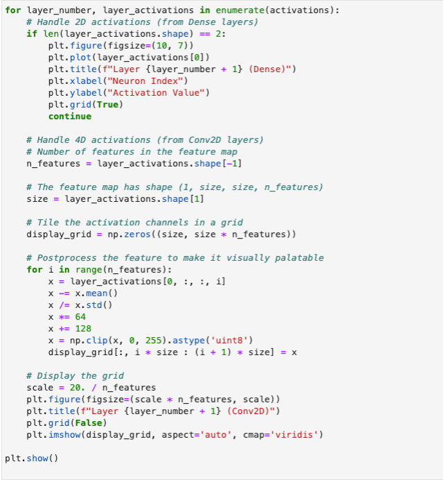

Machine Learning
This unit’s activity provided an immersive and visual understanding of CNNs and the different layers. This was significant for model interpretability, debugging and optimisation.
The image below shows the python code snippet used to visualise the layers:
Convolution layers Activation maps
Dense Layer Activations
Krizhevsky, A. (2009) CIFAR-10 and CIFAR-100 datasets Available from: https://www.cs.toronto.edu/~kriz/cifar.html [Accessed 24 May 2024].
Sewak, M., Karim, M.R. & Pujari, P. (2018). Practical Convolutional Neural Networks. Packt Publishing. Available from: https://learning.oreilly.com/library/view/practical-convolutional-neural/9781788392303/ [Accessed 24 May 2024].
Sharma, P., 2023. Applications of Convolutional Neural Networks(CNN). Analytics Vidhya. Available from: https://www.analyticsvidhya.com/blog/2021/10/applications-of-convolutional-neural-networkscnn/ [Accessed 27 May 2024].